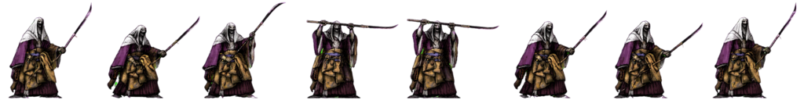
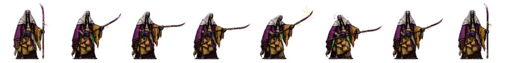
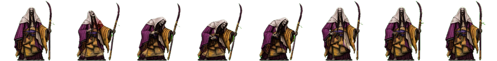

Clear Animation Fix
Keep the boss on deflect1/deflect2 during deflect feedback instead of falling through to hurt.
Current behavior appears to switch into hurt feedback while the deflect timer is active. Pick the direction that feels right.


